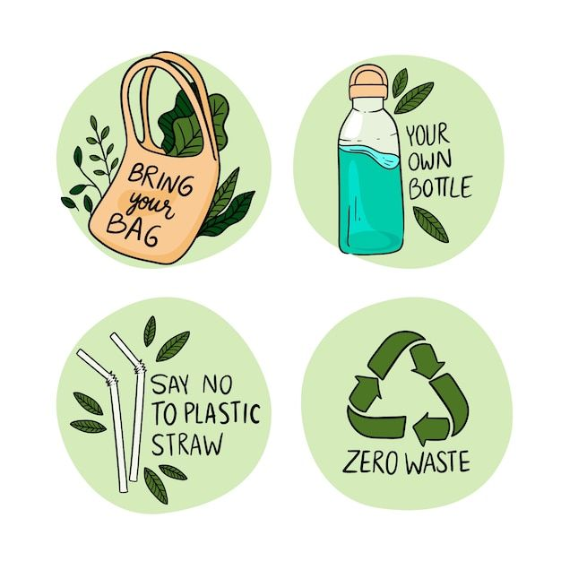
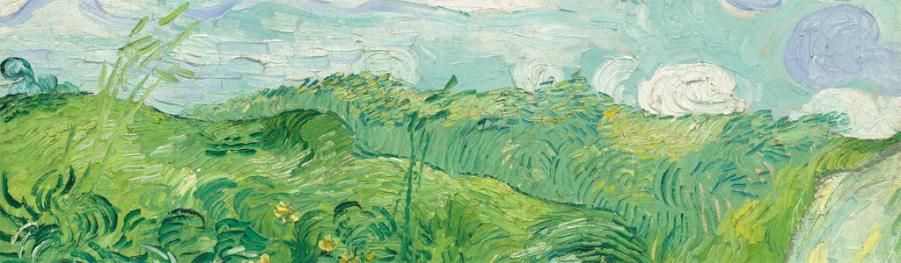
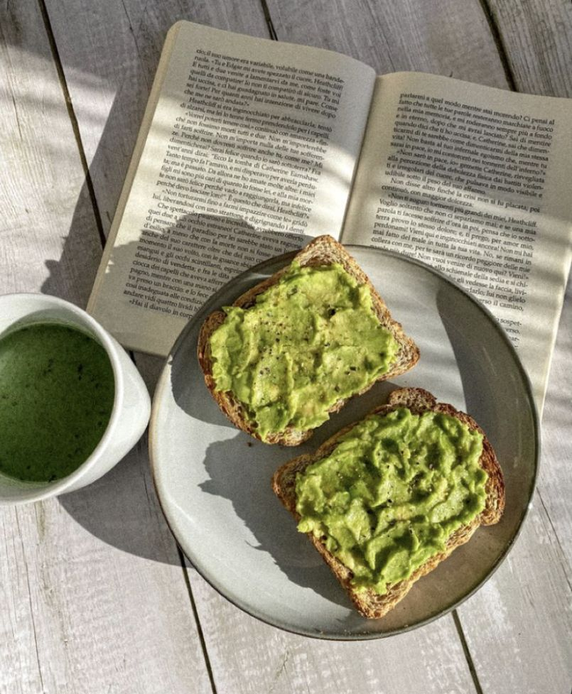
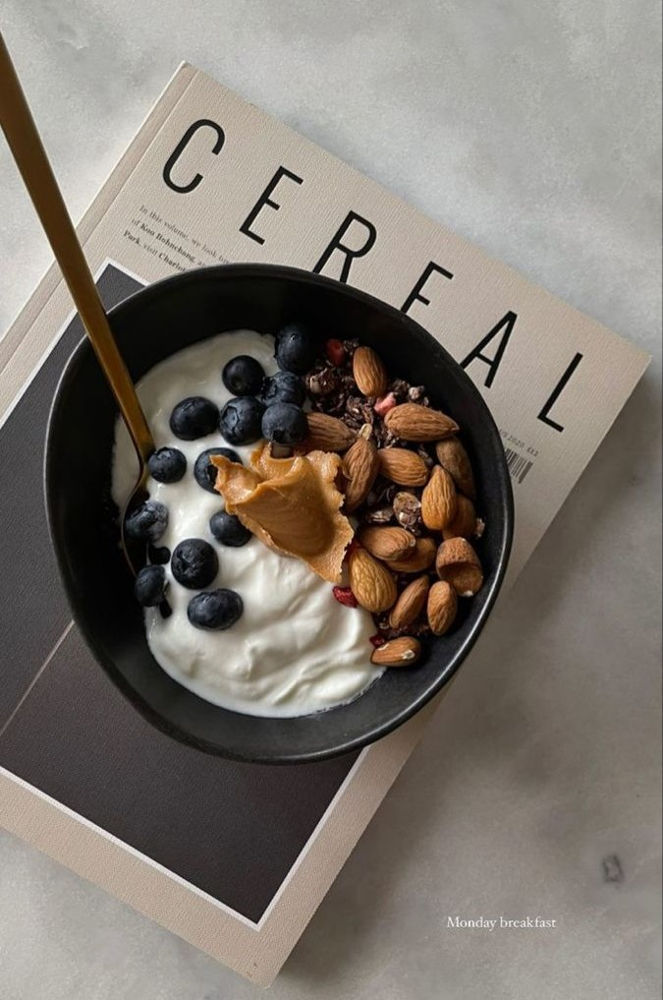
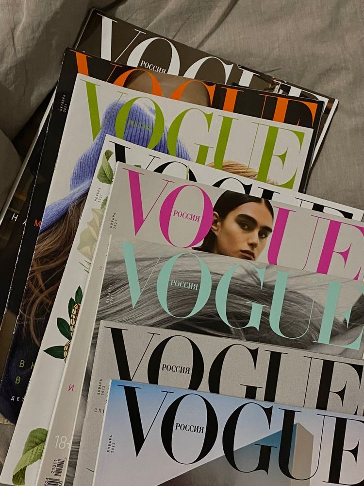
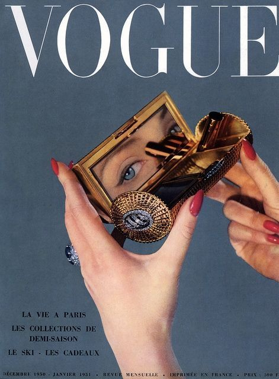
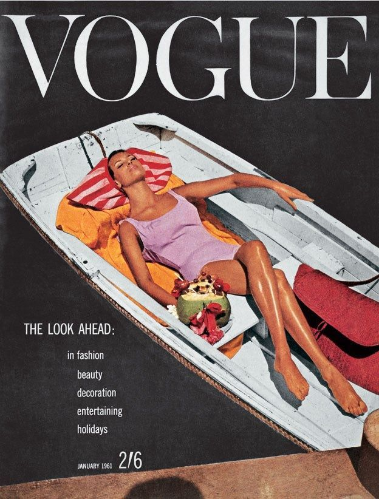
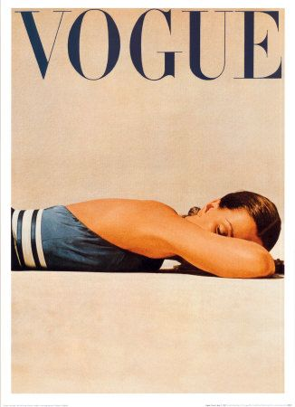
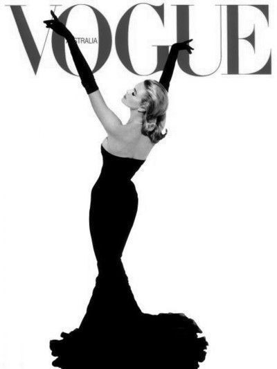

MIS PROYECTOS DESTACADOS
Campaña de Sensibilización "Verde Esperanza"
Uno de mis proyectos destacados fue la creación de una campaña de sensibilización ambiental para una organización sin fines de lucro. Diseñé una serie de materiales gráficos, videos y contenido para redes sociales. Nuestra campaña alcanzó a más de 1 millón de personas en un mes y resultó en un aumento del 30% en la conciencia ambiental y la participación en actividades de voluntariado.
 Rebranding de Marca "FreshFusion"
 Lideré un equipo en el rebranding de "FreshFusion", una empresa de alimentos saludables. Desarrollé un nuevo logotipo, empaques y una estrategia de marketing. En el primer trimestre después del lanzamiento, sus ventas aumentaron en un 20% y recibieron un premio a la mejor identidad visual en una conferencia de la industria.
Campaña de Moda "Elegancia Urbana" para Vogue
Durante mi estancia en Nueva York, tuve el honor de colaborar en una campaña de moda para Vogue. Desarrollé el concepto creativo, coordiné sesiones de fotos y diseñé el diseño gráfico para la campaña. Esta colaboración resultó en un aumento del 15% en las suscripciones a la revista y una mención especial en los premios de diseño de moda de la ciudad.
    RESULTADOS Y MÉTRICAS
Campaña de Sensibilización
Medimos el impacto de nuestra campaña mediante encuestas antes y después. La conciencia ambiental aumentó del 40% al 70%, y la participación en actividades de voluntariado se triplicó.
Rebranding de Marca
Observamos un incremento del 20% en las ventas en el primer trimestre después del rebranding. Además, el logro de un premio a la mejor identidad visual resaltó el éxito de la nueva imagen de la marca.
Campaña de Moda Vogue
La colaboración con Vogue generó un aumento del 15% en las suscripciones a la revista, y nuestro trabajo fue elogiado en la industria de la moda.
RESULTADOS RESUMIDOS
| Proyecto/Campaña | Alcance del proyecto | porcentaje de participación | Retorno de la inversión (ROI) | Impacto social (Si Aplica) |
|---|---|---|---|---|
| Campaña de Sensibilización "Verde Esperanza" | Alcance nacional | 60% | 3.5 | Reducción de residuos plásticos en un 15% |
| Rebranding de Marca "FreshFusion" | Alcance regional | 75% | 5.2 | N/A |
| Campaña de Moda "Elegancia Urbana" para Vogue | Alcance internacional | 80% | 4.7 | Aumento del empoderamiento de mujeres en la moda |